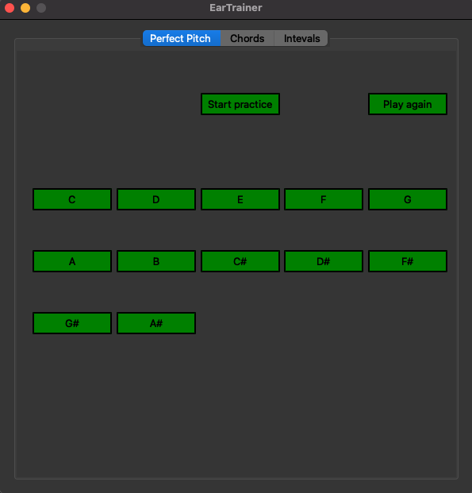

My name is Michał Tulik and this website has been designed to demonstrate some of my projects and skills.
Scroll down to view my projects.
About this website
I have created this website using HTML, CSS and JavaScript.
I decided to use a background video, which has been downloaded from pexels.com.
My website is using "Josefin Sans" font - imported from Google Fonts.
Also, I used FormSubmit which takes care of form submission.
Every icon on this website was brought by Font Awesome.
Click here to view the GitHub repository with the source code.

EarTrainer - practice app for musicans
This application has been created for musicans who wants to practice their hearing skills.
Having a great ear is a crucial skill for a working musican. It's not a coincidence that some of the best musicans on earth have also
the best ears.
This application has been created using Python. For the audio processing I used
Pydub library. GUI has been designed using PyQt.
Click here to view the GitHub repository with the source code.
A simple converter application
Using Python I've created a simple converter application that will download a video from youtube and extract it's audio.
GUI has been designed using Customtkinter library.
The movie is being downloaded using Pytube library and converted to the audio file using Moviepy.
So far I was able to build this applicaiton using PyInstaller however it's not ready for a full release on every platform yet.
Click here to view the GitHub repository with the source code.